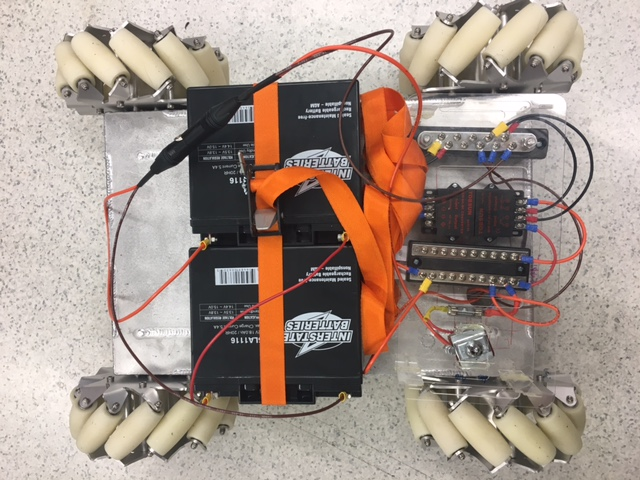
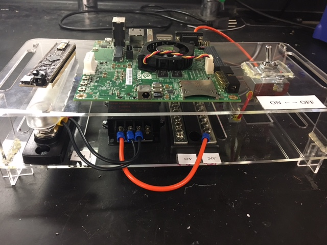

MOBILE BASE ROBOT FOR AIRPLANE MANUFACTURING
Overview
In collaboration with the NxR lab, ME398 Senior Design team, and MS in Mechanical Engineering students, the goal for this portion of the project was to source and control a mobile base for a system that would allow 3 or more mobile manipulators to cooperatively position a large-scale manufacturing component.
Background
At present, airplane industry uses a lot of human force to manufacture products. However, there has been an attempt to use robots to facilitate and substitute human in some tasks. In the collaboration between Boeing and NxR Lab of Northwestern University, the plan for designing robots for airplane assembly has been initiated.
The robots are expected to work in a group of three, and each robot can move freely in 2-dimension on the factory floor and attached with end-effector for grasping parts. A part will be held by three end-effectors of each robot. A human user can control the movement of part freely in 6 degree-of-freedoms. The task is mainly separated into two points. The design and fabrication of attached robot arm and wheeled mobile robot. The focus of this documentation is the development and fabrication of wheeled mobile robot.
The detail will be separated into three main parts which are, the mobile base selection, the design and assembly of the mechanical system, and the electrical system
The Mobile Base Selection
The mobile base should follow these baseline criteria
The robot that is the most satisfying to all criteria above is Programmable Mecanum Wheel Vectoring Mobile Robot - IG 52 DB model
The mechanical system design and assembly
The assembly of the robot can be separated into three parts. The top, mid and lower floor of the robot. The top part which will be attached in the future is the floor for the mobile manipulators. The mid floor is the area for batteries placement and electrical components attached on two acrylic layers to facilitate assembly and future maintenance. The lower floor is where the mechanical system is situated.
The mechanical system is chain-driven with double bearing support for each wheel. Each wheel is driven separately from the nature of mecanum wheel mobile base. The directions for each actuation are shown below.
The electrical system design and prototype
 The electrical components under the robot
The electrical components under the robot  Two 24 volts batteries
 The second floor of the shelf for electrical components
Above is the electrical schematic diagram of the system. We use two 12 volt batteries to provide 24 volts for the system. The voltage is then converted into 5 and 12 volts for use with PIC microchip and JETSON. The NVidia JETSON board is used as an onboard computer to communicate with PIC microchip to control the movement of the robot. The 24 volt is also used as a power supply for two motor controllers. Each motor controller is connected to Kangaroo x2 motion controller which is used as a device for tuning feedback controller of each wheel. In the first phase with an objective to test the correctness of electrical connection, Kangaroo is connected to the RC receiver the future, the Kangaroo will be connected to PIC to communicate and facilitate the control of the robot.
Tuning the Kangaroo and Setting up for RC Control
Kangaroo is a device for auto-tuning the Sabertooth motor controller. We also connect RC receiver to Kangaroo for controlling the robot remotely. The setup of the control is such that each axis of the joysticks control an individual wheel. For example, the throttle control (up-down on the left joystick) controls the back left wheel, while the rudder control (left-right on the left joystick) controls the front right wheel. The right joystick has a similar setup for the other wheels.
Progress and Next step
At present, the robot can be controlled by joystick. However, the control is counter-intuitive from RC car. Thus, the next step is to control the robot with a microcontroller with Linux computer using NVIDIA JETSON onbord computer to communicate with the PIC microchip. The robot manipulator is also needed to be setup on the robot.
Let's see more
Teammates
- Elton Cheng, the MS in Robotics candidate, Northwestern University
- Yuchen Rao, the MS in Robotics candidate, Northwestern University
Acknowledgements
- Dr.Jarvis A. Schultz, the associate director of Ms in Robotics, Northwestern University